5: VS Code and OSC setup
Exploring VS Code and configuring its connection to OSC
![]()
1 Introduction
In the rest of this workshop, we’ll primarily work with the following set of tools to run code, access data, and use agentic AI:
A code editor, VS Code
A shared computing environment, OSC (the Ohio Supercomputer Center)
Generative and Agentic AI tools integrated in our code editor, GitHub Copilot and Claude Code
In this session, we will go through the necessary steps to get the connection between the first two components, VS Code and OSC, configured — in such a way that it works well for using the AI tools.
This same setup is what I use in my own work, and you can continue using it after the workshop. Getting this configured on your own computer is definitely a process, but it is well worth it in my opinion.
Interested in using in-editor AI tools also for R during and/or after this workshop?
First off, for lightweight experimentation, know that you can create and edit R scripts right in VS Code, ask Copilot and Claude to help you write R code, and run R code by starting R in the terminal.
However, for more extensive and interactive R (and Python!) usage, the Positron editor is the way to go. See the Positron IDE setup instructions for details!
2 Exploring VS Code
2.1 Introduction
VS Code is basically a fancy text editor. To emphasize the additional functionality relative to basic text editors like Notepad, editors like VS Code are also referred to as IDEs: Integrated Development Environments1.
It’s a great editor all around, and when working at OSC in particular (at least if you need to run command-line programs, and not just, say, R), it’s by far the most convenient and user-friendly way, in my opinion.
You can also use VS Code at OSC in a web browser via OSC OnDemand, like we did in the pre-workshop session. That’s nice because it requires no installation or other setup. But in the long run, connecting your own VS Code installation to OSC is preferable. In the context of this workshop, the primary reason we use our own VS Code installation is that it lets us use the in-editor AI tools when connected to OSC (this is not possible with the OnDemand version).
You should have already installed VS Code (full name: Visual Studio Code) on your laptop. Go ahead and open it.
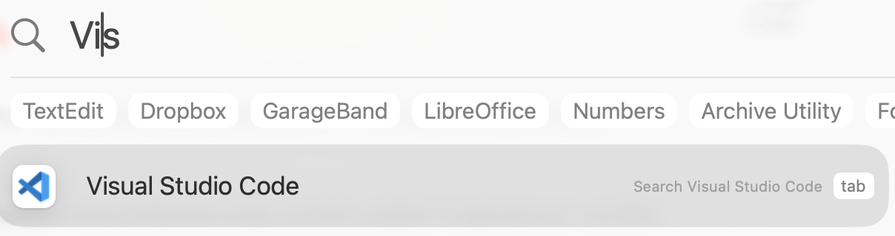
2.2 The VS Code User Interface

The main part of the VS Code window is the Editor Pane (
Cabove), where you can open and edit text files.The panel at the bottom (
Dabove) contains a terminal, but isn’t open by default.In the top menu, click
Terminal>New Terminalto open it.By default, the Primary Side Bar (
Babove) shows a file explorer, where you can see your files and create new ones, and so on.The Activity Bar (narrow side bar,
Aabove) on the far left has:Icons to toggle between options for the Primary Side Bar. For now, pay attention to the bottom one, Extensions, which we’ll use soon.
A (cog wheel icon) in the bottom, with two key options:
- Command Palette, where you can access all VS Code functionality
- Settings, where you can configure VS Code
Exercises
In the cog wheel menu, click
Themes>Color Themeto explore VS Code color themes and optionally change the color theme to your liking.You can resize panes by dragging the borders between them: try doing this with the Primary Side Bar and the Panel containing the terminal.
3 Setting up the OSC connection in VS Code
Now, we’ll perform some one-time configuration steps to enable connecting VS Code to OSC via so-called “SSH tunneling”. This connects VS Code to OSC in such a way that not just the terminal but also the rest of the program operates on OSC’s file system2.
While it’s fairly straightforward to set up a connection to an OSC login node, we will additionally configure a connection to a compute node, which is considerably more complicated.
However, this avoids clogging up OSC’s login nodes3, and e.g. gives you more flexibility to test-run code in the terminal. (Additionally, we will use a setup that will also work for the R IDE Positron, which is a nice bonus.)
Once configured, this is a very convenient and powerful way to access OSC.
3.1 Install the Remote Development extension
- In the VS Code Activity Bar, click the Extensions icon at the bottom (left screenshot below).
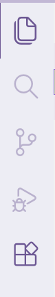
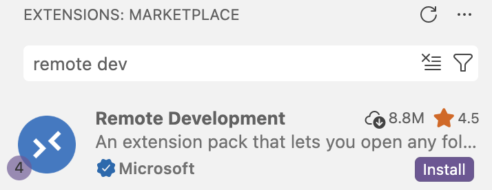
In the Extensions view that now shows up in the Primary (wide) Sidebar, type “remote dev” in the search box, and the “Remote Development” extension should appear (right screenshot above).
Click the “Install” button to install this extension.
3.2 Configure the OSC connection
Next, we’ll use functionality from this extension pack to set up the connection to OSC:
Open the VS Code Command Palette (cog wheel => Command Palette or Ctrl/⌘+Shift+P).
Type “remote open” and then:
- Select the top option “Remote-SSH: Open SSH Configuration File…” (left screenshot below)
- Again select the top option, a file that contains the username you have on your computer, and ends in
/.ssh/config(right screenshot below):
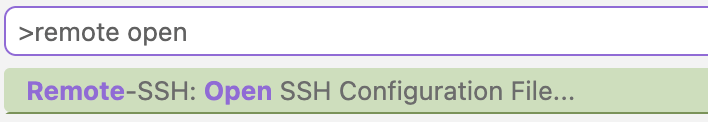
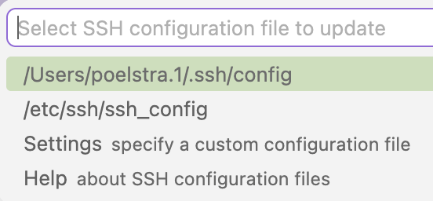
Paste the following into the SSH configuration file that opens:
These instructions are for Windows, click “Mac” above to see the Mac instructions.
Host osc-cardinal-login User <osc-username> HostName cardinal.osc.edu Host osc-cardinal-compute User <osc-username> ForwardAgent yes StrictHostKeyChecking no UserKnownHostsFile=/dev/null ConnectTimeout 120 ProxyCommand C:/Users/<computer-username>/.ssh/osc-compute-proxy.cmd %hHost osc-cardinal-login User <osc-username> HostName cardinal.osc.edu Host osc-cardinal-compute User <osc-username> ForwardAgent yes StrictHostKeyChecking no UserKnownHostsFile=/dev/null ConnectTimeout 120 ProxyCommand /Users/<computer-username>/.ssh/osc-compute-proxy.sh %hEdit this SSH configuration file to replace the placeholders with your own information:
In both instances, change
User <osc-username>to your OSC username, e.g toUser jane.Change
<computer-username>to your username on your computer (the same one that appears in the file path at the top of the config file4), e.g. tomiller.103.
Then, save the changes you made to the file (
File>Saveor Ctrl/⌘+S).In the file above, the first connection (
osc-cardinal-login) is to a login node. The second (osc-cardinal-compute) is to a compute node, and it refers to a “proxy script” we will create now. In the VS Code terminal that you opened earlier, copy-and-paste and then execute the following command as-is:These instructions are for Windows, click “Mac” above to see the Mac instructions.
(They also assume you are using PowerShell, which is the default Windows shell in VS Code. If you have previously installed Git Bash or are using WSL, you will be using a Unix shell and should use the Mac instructions instead. If you’re not sure, you’re very likely using PowerShell — and you should be able to see the word “PowerShell” in the top right of the terminal.)
@' @echo off ssh -o LogLevel=QUIET -o BatchMode=yes osc-cardinal-login "/usr/bin/salloc -A PAS3454 -t 300 /bin/bash -lc 'nc $SLURM_NODELIST 22'" '@ | Out-File -Encoding ascii "$env:USERPROFILE\.ssh\osc-compute-proxy.cmd"cat > ~/.ssh/osc-compute-proxy.sh << 'EOF' #!/bin/bash exec ssh -o LogLevel=QUIET -o BatchMode=yes osc-cardinal-login \ "/usr/bin/salloc -A PAS3454 -t 300 /bin/bash -c 'nc \$SLURM_NODELIST 22'" 2>/dev/null EOF chmod +x ~/.ssh/osc-compute-proxy.shBecause connecting to a compute node may take a while to establish, we also need to increase the “connection timeout”. Open the VS Code Settings (cog wheel => Settings) and search for
remote.SSH.connectTimeout. Change the value from 15 to 300 (seconds).
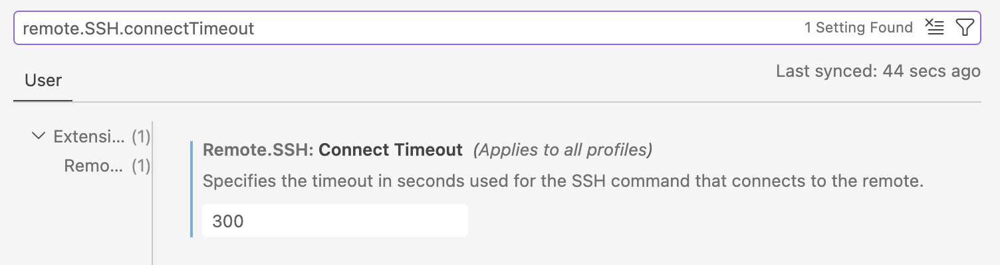
In the SSH configuration file, we defined two remote “hosts” at OSC that we can connect to:
osc-cardinal-login, which will connect to a login node of OSC’s Cardinal cluster. However, because the VS Code program will actually run on the login node when you connect it with SSH-tunneling, the below connection to a compute node is preferred.osc-cardinal-computewill connect to a compute node of OSC’s Cardinal cluster. We can’t connect directly to a compute node but have to request a compute job, which is why that connection is more complicated. This connection will last for 5 hours (300 minutes), as it requests a compute job of that duration.
The proxy script handles the compute job submission and connection to the allocated compute node. We use a script rather than a much simpler inline command so that the configuration works with both VS Code and Positron (for R).
Because compute jobs (for osc-cardinal-compute) may take a while to start, we also increased the “connection timeout” (amount of time VS Code will wait for the connection to be established) to 5 minutes.
The -A PAS3454 part of the connection instructs OSC to charge the compute time to the workshop’s OSC Project. While it’s OK to keep using this for a bit after the workshop — if you have access to another OSC project, you should change PAS3454 to that project’s number.
To configure connections to other OSC clusters (currently, Pitzer and Ascend), you can add additional SSH configuration and proxy script files, in which you replace cardinal by the name of the other cluster, pitzer or ascend.
3.3 Configuration so you won’t have to enter your OSC password
The following steps will prevent OSC from prompting you for your OSC password every time you connect to OSC via SSH — it will use an SSH key pair for authentication instead5. (This is convenient when it comes to login node connections, and necessary for the compute node connection we configured.)
In the terminal you should have open in VS Code (regardless of whether you’re using Windows or Mac), execute the following command to generate a SSH key pair:
ssh-keygen -t rsaYou will be asked several questions, and in each case, simply press Enter to accept the default answer — do this until you see some ASCII-art-style output, and get your command prompt back.
Execute the following command to transfer the public key to OSC’s Cardinal cluster, replacing
<user>with your OSC username:These instructions are for Windows, click “Mac” above to see the Mac instructions.
# Replace <user> by your username, e.g. "jelmer@cardinal.osc.edu" cat ~/.ssh/id_rsa.pub | ssh <user>@cardinal.osc.edu 'mkdir -p .ssh && cat >> .ssh/authorized_keys'# Replace <user> by your username, e.g. "jelmer@cardinal.osc.edu" ssh-copy-id <user>@cardinal.osc.eduYou should be prompted for your password: enter it.
Congratulations on making it this far! 🥳 Now, let’s test the configured connection.
4 Connecting VS Code to OSC
4.1 Connect to OSC
With the one-time configuration steps done, you should from now on be able to connect to OSC like so:
Open the Command Palette (cog wheel => Command Palette or Ctrl/⌘+Shift+P).
Start typing “SSH connect”, click on
SSH: Connect to Host,Select the second of the connections you just set up,
osc-cardinal-compute:
A new VS Code window will open. The connection may take a little while (typically 5–30 seconds, could be longer if you’re unlucky) to establish, because a compute job has to be requested, assigned resources, and started. In the bottom right, you should see something like the following while it is connecting:
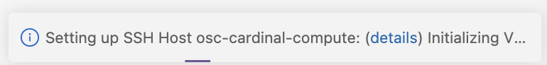
A little indicator will be moving back and forth while it’s trying to connect.
[TBA - Select Operating System: Linux]
Once connected, the following pop-up likely appears: click “Trust Folder and Continue”.
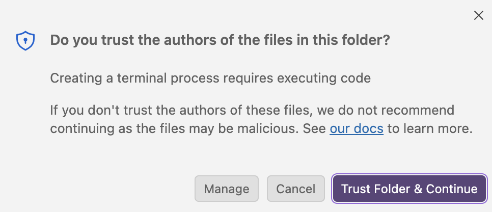
If the connection fails or takes more than a minute to establish, ask us for troubleshooting help. As a last resort, try connecting to the login node connection
osc-cardinal-logininstead.
4.2 Create a personal folder on OSC and open it
VS Code takes a specific folder as a starting point in all parts of the program: in its file explorer, in the terminal, when saving files, and so on. By default, this folder is your Home directory. But in this workshop, you’ll work in a personal folder specific to the workshop, so let’s create (if needed) and open that one now.
Create the folder
This is only necessary if you didn’t do the pre-workshop learning. Otherwise, you should already have this folder.
Open a terminal in VS Code (
Terminal>New Terminal).To create a dir (folder) with your username, execute the following command:
mkdir /fs/scratch/PAS3454/people/$USER(
$USERis an environment variable that contains your username, so this exact command works for everyone.)
Open the folder
- Click
Open...with a folder icon in the Welcome document (or:File>Open Folder) - Type (or select) the path to your folder (
/fs/scratch/PAS3454/people/<user>).
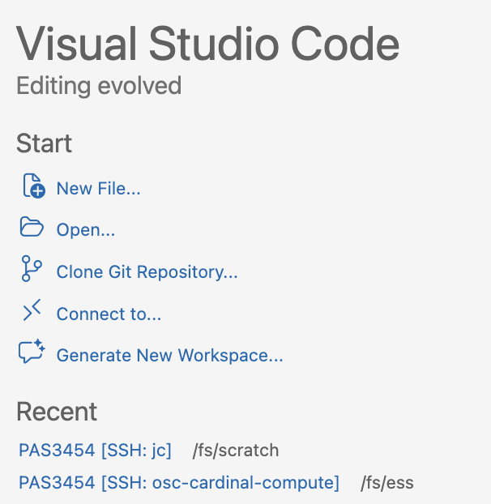
The
Open... button allows you to open a folder (dir) anywhere on OSC.This will cause the program to reload, and the “trust popup” will appear again6.
The above two-step procedure (connect to OSC, then open a folder) can be done in one even simpler step, after you’ve connected to that folder at least once:
Once you re-open VS Code (or open a new window with File > New Window), the Recent section in the VS Code “Welcome” document will now show the folder(s) you previously opened:
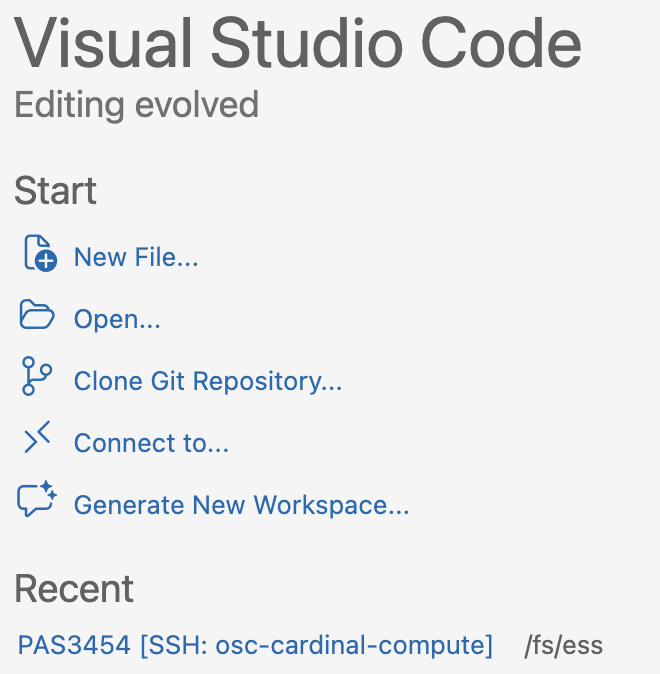
Simply clicking on that line will open that folder and in the process connect to OSC!
Here are some miscellaneous settings that you may want to change in VS Code.
To change any of these, start by opening the VS Code Settings (cog wheel > Settings). Then, search for the following settings to change them:
You can turn on auto-save for files in the editor, which I like. Search “auto save” and select the option you prefer — I use
afterDelay.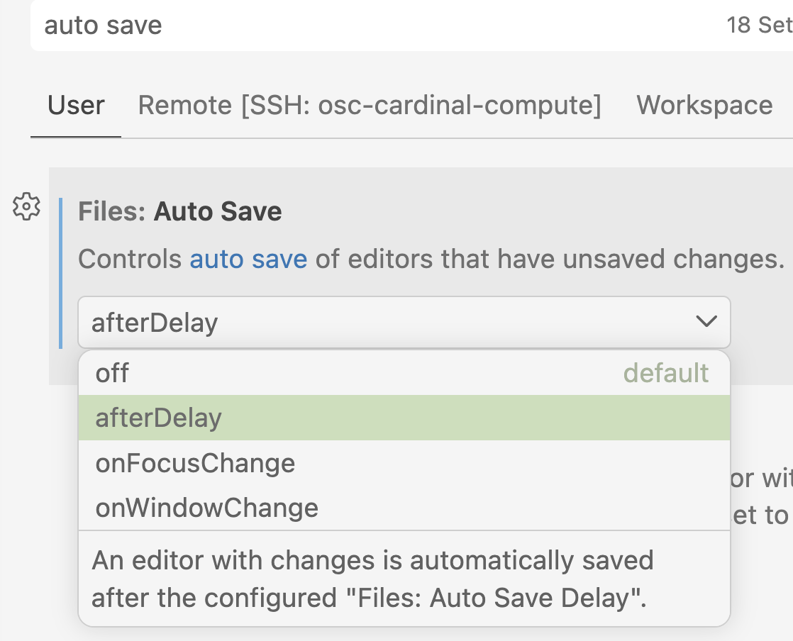
Turn off “Sticky Scroll” in the terminal. This is a newish feature that, as far as I can tell, seems to malfunction and can be really annoying: it will e.g. regularly hide the line you just executed. Search for “terminal sticky” and uncheck the box:
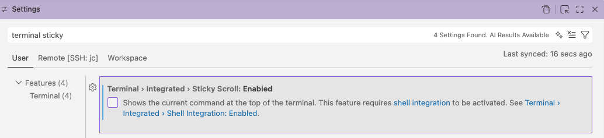
Integrated: Sticky Scroll' option highlighted">- I also think the so-called “Minimap”, which shows a small overview of a file in the editor pane, is uninformative and takes up space. Search for the option
editor.minimap.enabledand turn it off.
Footnotes
The RStudio program is another good example of an IDE — and like RStudio is an IDE for R, VS Code will be our IDE for shell (and other) code.↩︎
In case you’re familiar with the
sshcommand, this is similar to connecting your terminal to OSC withssh <username>@cardinal.osc.edu. But instead of connecting just your terminal, this approach allows you to run the entire VS Code environment on OSC, which has many benefits.↩︎The VS Code program will actually install itself and run on whichever host you connect it to, so if you connect to a login node, the program will run on that login node.↩︎
If you have an OSU-managed computer this will be you
name.#. If you have you own computer, you likely picked your username yourself.↩︎It’s OK if you don’t understand what this is.↩︎
for this folder, it won’t appear again in the future, once you’ve trusted it.↩︎